Singapur
Es un país soberano insular de Asia, formado por sesenta y tres islas, cuya forma de gobierno es la república parlamentaria. Su territorio se divide en cinco consejos de desarrollo comunitario. Singapur es una ciudad-Estado, por lo que su capital se considera la ciudad de Singapur. Está situado al sur del estado de Johor (península de Malasia) y al norte de las islas Riau (Indonesia), separado de estas por el estrecho de Singapur. Con 733.1 km², es el país más pequeño del Sudeste Asiático. Su territorio ha crecido constantemente con tierras ganadas al mar.
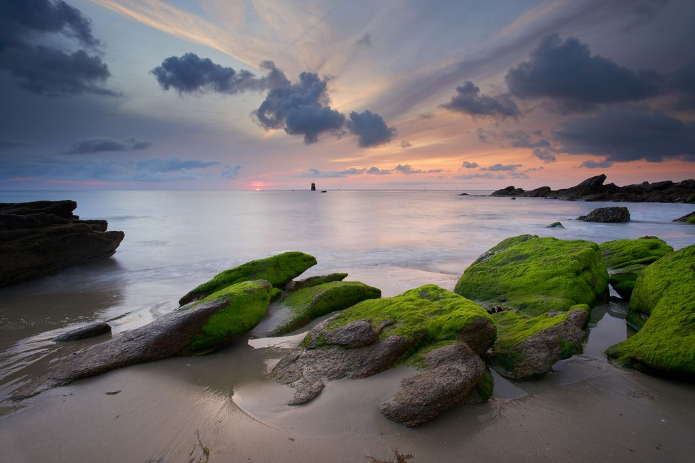
 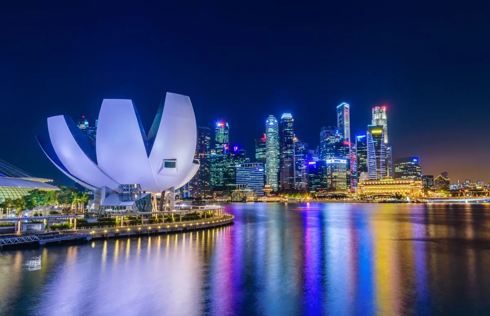
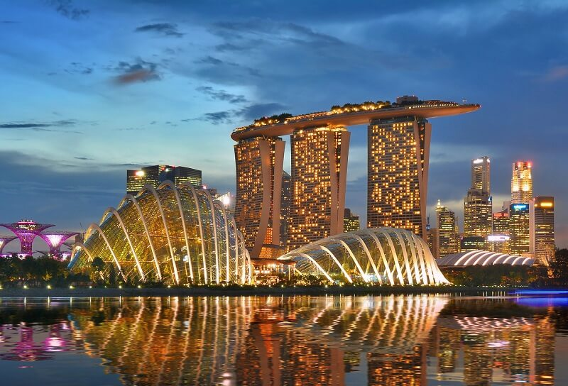
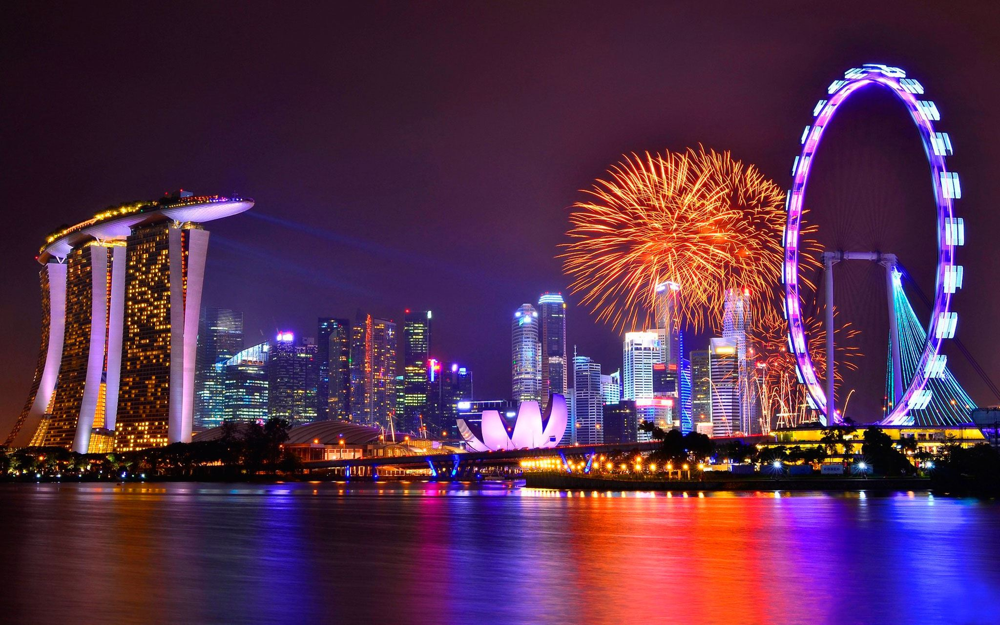
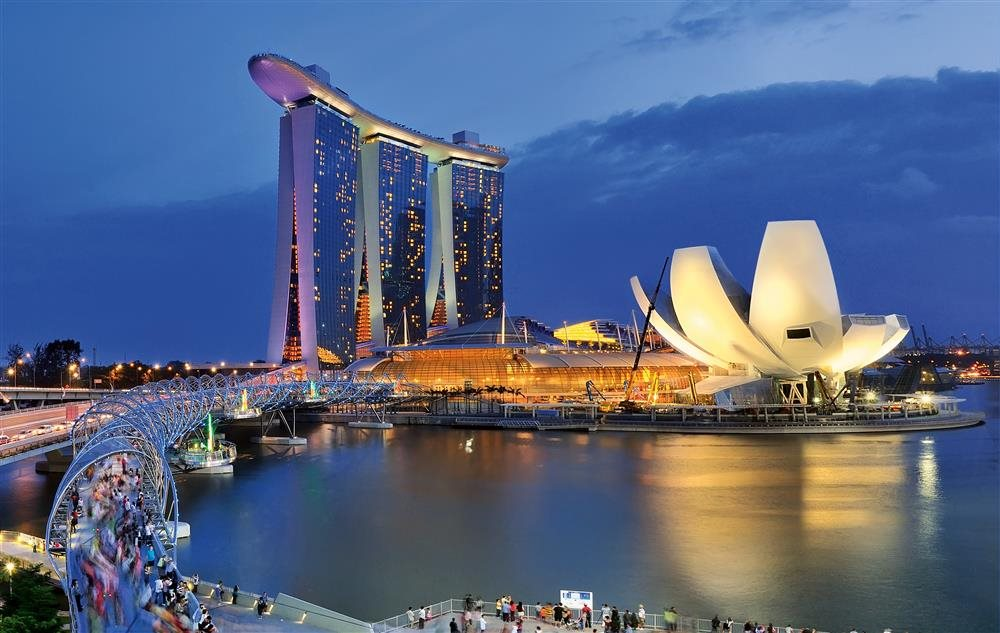
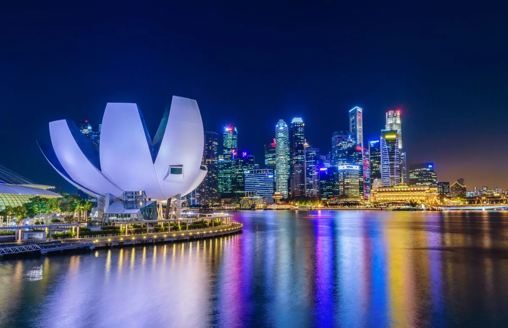
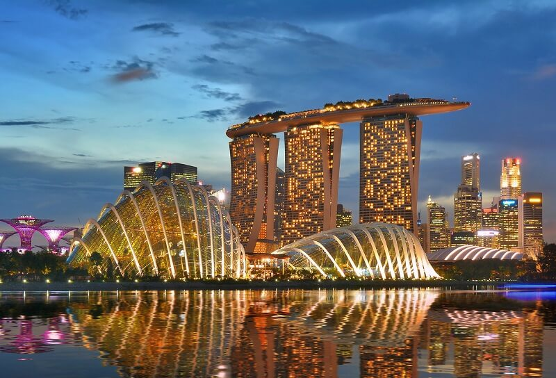
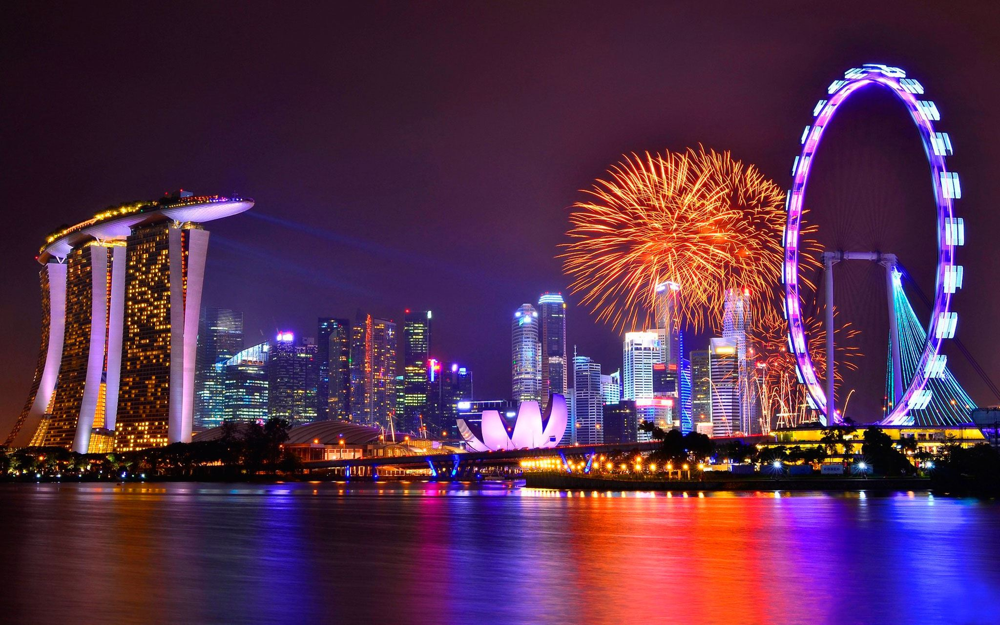
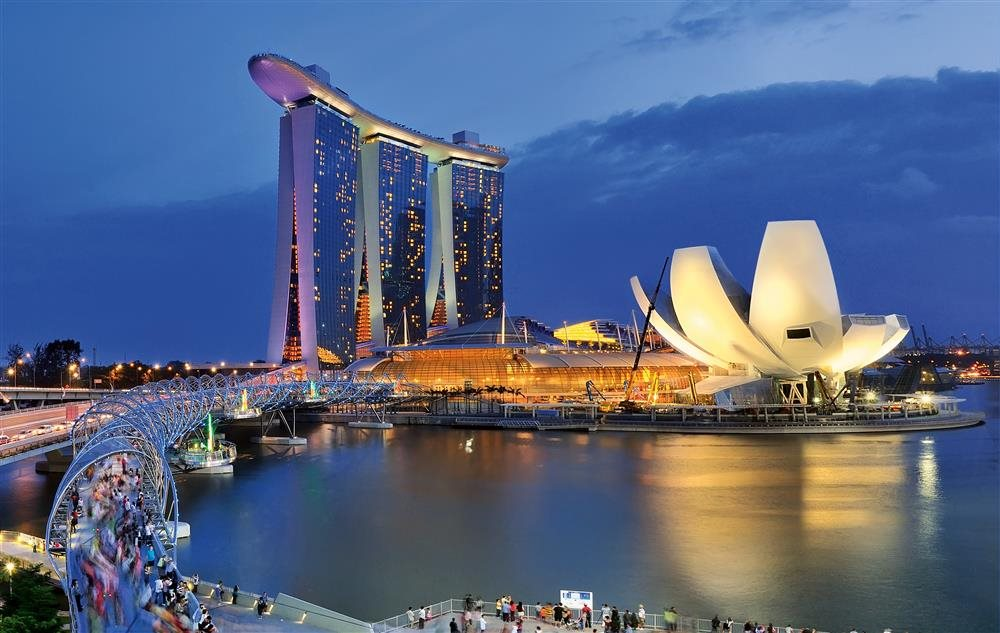
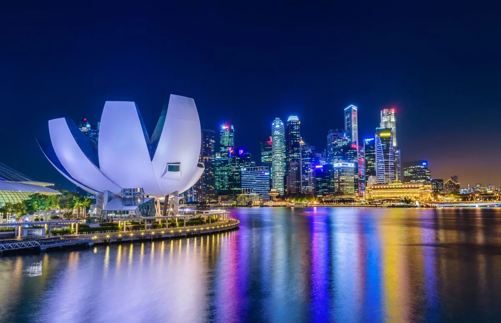
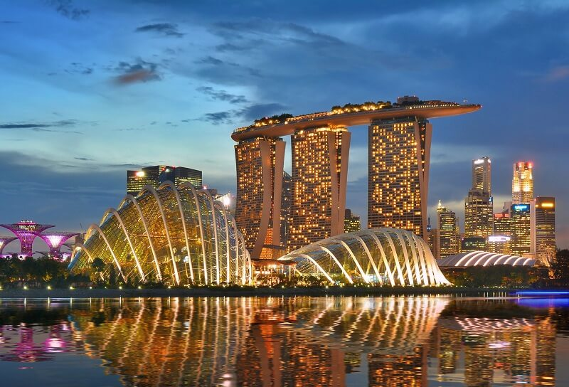
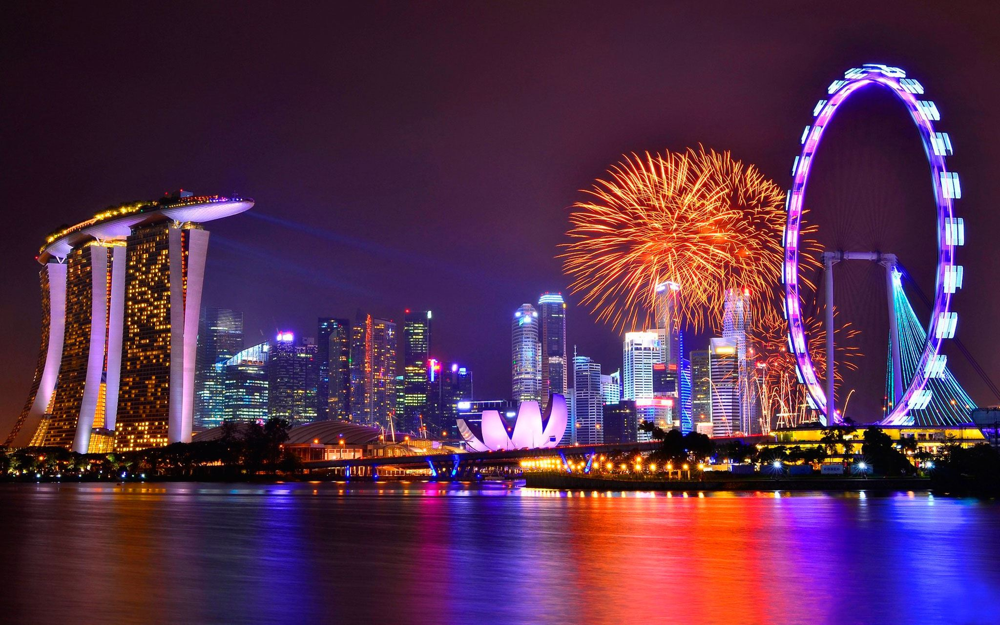
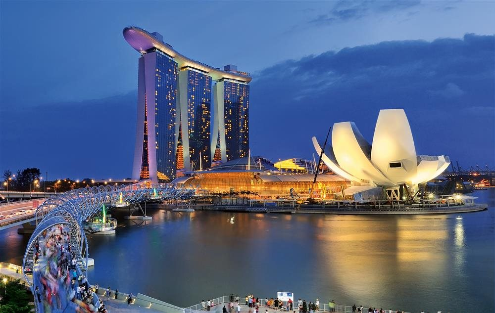